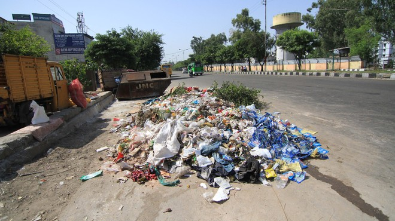

This includes paper from classrooms, offices, libraries, and dormitories, such as notebooks, printouts, and packaging materials.
Cafeterias, dining halls, and on-campus eateries contribute significantly to food waste, including leftovers, spoiled food, and packaging materials.
Single-use plastic items like water bottles, utensils, and food containers are prevalent on university campuses.
Discarded computers, printers, and other electronic devices can pose environmental risks due to their hazardous components.
Landscaping and maintenance activities generate yard waste, such as leaves, branches, and grass clippings.
Lovely professional universities often have laboratories for various disciplines, which may generate chemical, biological, or radioactive waste
Lovely professional universities often face constraints in terms of available space for waste storage and disposal, coupled with budgetary limitations for implementing effective waste management initiatives.
Engaging the entire university community, including students, faculty, and staff, in sustainable waste management practices can be a significant challenge.
Improper disposal of hazardous waste, such as chemicals from laboratories or e-waste, can lead to environmental pollution and potential health risks.
Establishing and maintaining an efficient recycling system on campus can be logistically and financially demanding.
Encouraging the university community to reduce waste generation through practices like reusing materials, avoiding single-use plastics, and implementing effective source separation for recyclables and compostable materials.
Establishing on-campus composting facilities or partnering with local composting programs to divert food waste and yard waste from landfills.
Implementing comprehensive recycling programs for paper, plastics, metals, and e-waste, with clear guidelines and accessible collection points across campus.
Conducting educational campaigns, workshops, and incorporating sustainable waste management practices into the curriculum to promote awareness and encourage active participation from the university community.
Collaborating with local authorities, waste management companies, and environmental organizations to develop efficient and sustainable waste management strategies tailored to the needs of lovely professional universities.
Implementing strict protocols for the safe handling, storage, and disposal of laboratory waste, including hazardous materials, in compliance with relevant regulations.